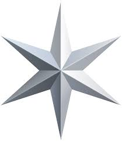

K.Kukesan
My name is Ketheeswaran Kukesan
I was born on 1998 october 29
I live at small village in Jaffna, Srilanka
My mother name is Vijiyakumary. she teaches in J/Kokuvil hindu primary school. She love her occupation. That’s I have learned from my parents the value of time, honesty, hard work and commitment to the purpose. I have younger brother. he studies in Jaffna Hindu College.
I am a good student, who actively participates in all activities, be it exams or extra curricular activities. The extracurricular activities like sports, quiz competitions, essays and speech competitions etc. are the heart of my institution. I myself am essay competition winner on various times. Truly it is said, one can not study from the books alone. Instead, one has to learn from all extracurricular activities in which one participates. I myself am the best essay writer, cricket player, singer and dancer and topper in all exams.